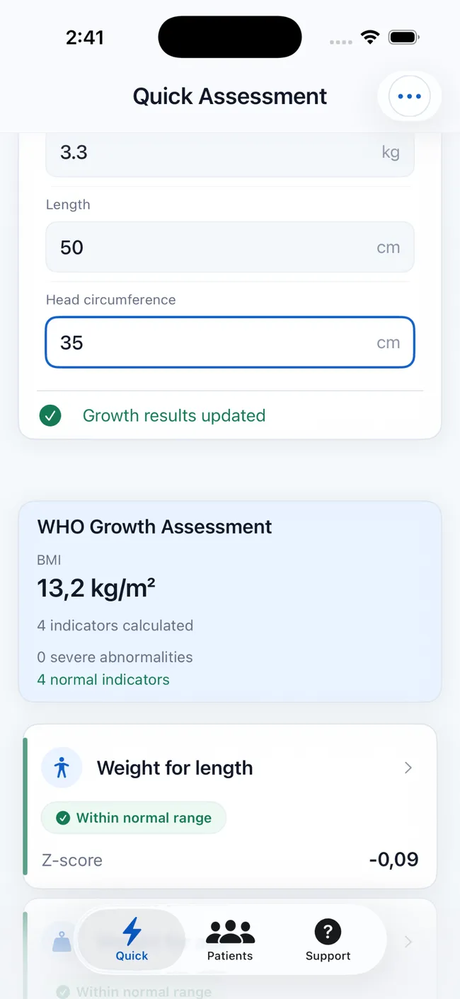
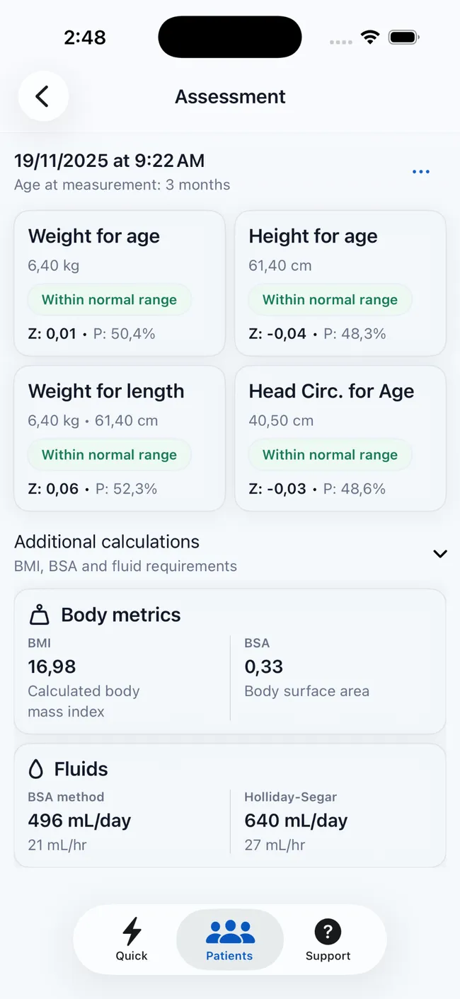
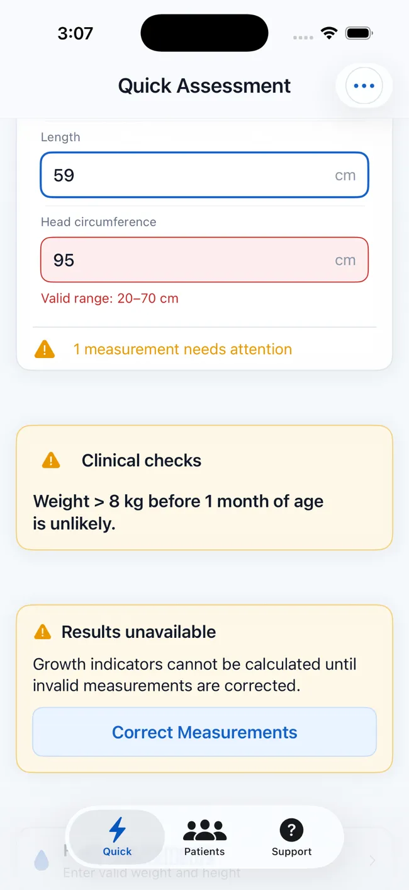
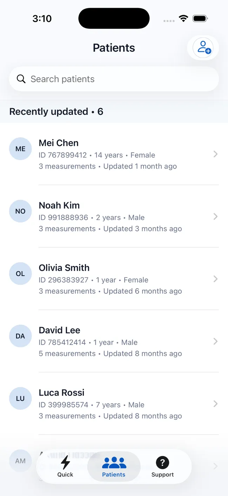
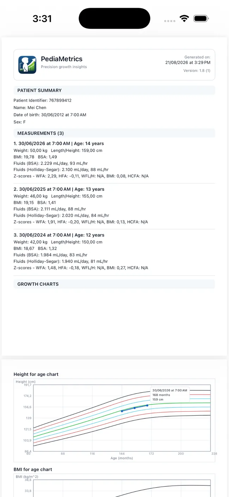
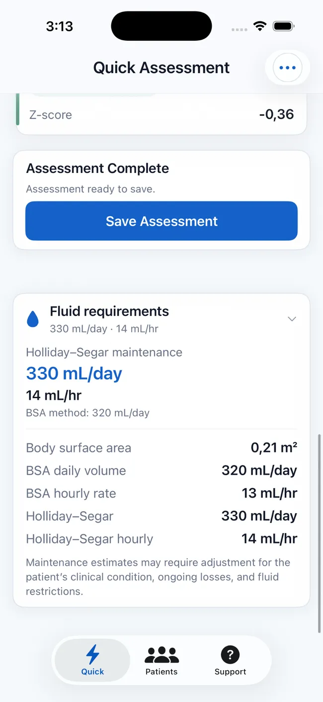

01
Enter measurements
Add age, sex, weight, length or height, and head circumference where appropriate.

WHO-based pediatric growth assessment
Calculate Z-scores and percentiles, review growth classifications, follow trends across visits, and create structured reports—all in one iPhone and iPad app.
Free to download · Optional in-app purchases · iPhone & iPad

Built for people who assess or follow pediatric growth:
From measurement to follow-up
PediaMetrics brings the full workflow together: enter measurements, catch possible errors, interpret results, and see how growth changes over time.
Add age, sex, weight, length or height, and head circumference where appropriate.

Flag unlikely values and possible entry mistakes before relying on the calculation.

See applicable Z-scores, percentiles, classifications, body metrics, and fluid estimates.
Plot saved measurements on interactive WHO curves to review growth across visits.

One structured workflow
A single measurement can answer an immediate question. Saved histories, charts, and reports make the result useful beyond the moment it was calculated.
Calculate applicable Z-scores, percentiles, and classifications for weight, height or length, weight-for-length or height, BMI, and head circumference.
Surface unlikely values and possible unit-entry mistakes before they obscure the result.
Save patient profiles and review measurements on interactive charts across multiple visits.
Export patient summaries, measurements, Z-scores, validation results, and eligible charts.
Review BMI, body surface area, and Holliday–Segar maintenance-fluid estimates in the same flow.



Beyond the chart
Review body mass index, body surface area, and maintenance-fluid estimates without switching tools or re-entering the same measurements.
Built for informed use
Health-related tools need more than polished screens. PediaMetrics makes its standards, data handling, and role explicit.
Assessments use the WHO 2006 Child Growth Standards and WHO 2007 reference for the appropriate ages and indicators.
Review the WHO standardsNo account is required. Patient profiles and measurement histories are stored locally on the user's device, not on PediaMetrics servers.
Read the privacy policyPediaMetrics supports assessment and documentation. Results must be interpreted in clinical context and do not replace professional medical judgment.
Contact supportPediaMetrics is an independent app and is not affiliated with or endorsed by the World Health Organization.
Before you download
What the app supports, where the data stays, and which devices can run it.
PediaMetrics supports weight-for-age, height or length-for-age, weight-for-length or height, BMI-for-age, and age-eligible head-circumference-for-age assessments.
The app uses the WHO 2006 Child Growth Standards and the WHO 2007 growth reference, applying the appropriate indicator and age range.
No account is required, and patient records are stored locally on your device rather than on PediaMetrics servers. See the privacy policy for details.
Yes. Save profiles and measurement histories, then review the available measurements on interactive growth charts to see change over time.
Yes. PediaMetrics can generate structured PDF reports with patient details, measurements, assessment results, validation information, and eligible growth charts.
Yes. PediaMetrics is designed for compatible iPhone and iPad devices. Current compatibility details are listed on the App Store product page.
Pediatric growth, clearly structured
Assess measurements, follow change, and keep reports ready on iPhone and iPad.
 Free to download · Optional in-app purchases
Free to download · Optional in-app purchases